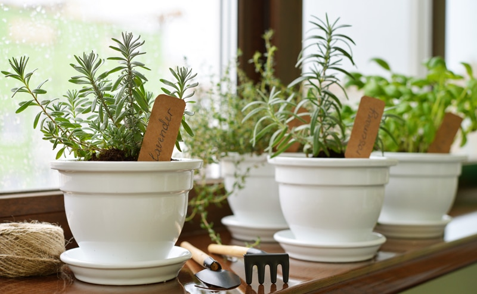
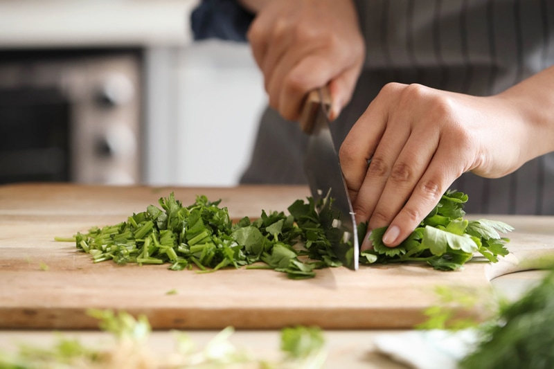

How to Use Herbs (fresh or dried)
Adding herbs and spices to recipes creates a depth of flavor that turns any dish from ordinary to extraordinary. This post is about how to substitute herbs and spices, but I will also spend some time explaining the slightly different approach when used in raw food preparations.

In raw recipes, you can use dried or fresh herbs. If at all possible, I try to use fresh herbs because they tend to have brighter flavors. There are times when you don’t want to use dried herbs in place of fresh, and a perfect example of that is in pesto recipes. You need to use fresh basil for the volume, freshness, flavor, and color. Dried basil just won’t work.
The Difference Between Fresh and Dried Herbs
Before we dive into substitutions, we need to have a clear understanding of the contrast between fresh and dried herbs, which can be as profound as the difference between summer and winter. One is full of sparkle, warmth, and life. The other is dull, cold, and lifeless. Ok, maybe that is a bit extreme, but it gets the point across.
I like to think of it this way…fresh herbs work wonders in cold preparations (raw foods) because dried herbs don’t reconstitute properly without heat and moisture. Therefore the flavor is muted. When using dried herbs in raw recipes, I find that the dish tastes best the next day. The extra time allows the dried herbs to “rehydrate” and infuse the food with its flavor. So it’s a good idea to plan ahead.
When using fresh herbs in raw recipes, you will want to chop, mince, julienne, or massage the herbs so all the amazing flavor components can be released. As a test, get some fresh rosemary and hold it to your nose and take a nice long inhale. You will smell it, but now I want you to pinch it with your fingernails, breaking the little leaves. Now take a sniff. See how much more intense the aroma is? By bruising or cutting the fresh herbs, the natural oils are released, and this will infuse the dish more completely.
Dried herbs tend to do best when they’re added earlier in the cooking process so that they have enough time to infuse the whole dish. Add them too late, and the flavor isn’t nearly as robust. When cooking, the heat helps to release their flavor. So in raw dishes, we have to help coax those flavors out.

One herb to watch out for when going from fresh to dried is oregano. It is very powerful, and the conversion rules don’t apply with this herb. Always start with a small amount and build up the flavor as needed for the recipe. Too much oregano and it can create a metallic taste. Outside of taste testing, ask yourself how a particular herb is used in a recipe. Is it a garnish to add a pop of color? Will you be cooking with it? If so, dried herbs can go into the cooking process a lot sooner than fresh.
Caring for FRESH Herbs:
-
Fresh herbs should only be washed prior to using.
-
Avoid old herbs that are wilting, brown, slimy edges, faded leaves or budding flowers.
-
Parsley and cilantro can be quite dirty so submerge in cold water. Agitate and repeat until the water is clean. Once clean pat or spin dry to remove excess water.
-
Store them in the fridge (except for basil), remove stray leaves and place in a container with 1-2″ of water. Place a plastic bag over the top to protect them from cold air. Change water every few days or when discolored.
Caring for and Selecting Dried herbs:
-
Purchase in small amounts due to losing flavor.
-
It is best to store them in tightly sealed containers in a dark and cool spot. Date each container with the purchase date.
-
Replace after 6-12 months. Old herbs can taste bitter and musty and many lose their scent.
Today’s Exchange Rate
Fresh Herbs to Dried
- Golden rule – typically three times the amount of fresh herbs as dry.
- Example: 1 Tbsp fresh herbs = 1 tsp dried herbs
Dried Leaf Herbs to Ground
- When substituting a dried leaf herb for ground herb, use about half of the amount of the ground version for the amount of dried called for in the recipe.
- Example: 1 tsp dried leaf herb = 1/2 tsp ground dried herb
I hope you found this helpful. I don’t want you to miss out on all the wonderful flavor and health benefits that herbs have to offer! blessings, amie sue
© AmieSue.com